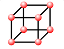

Unit 1: Matter, Chemical Bonding, and Chemical Trends
Activity 6: Building Molecular Models
Content
Molecular Compounds and Their Shapes
What determines the shape of a molecule? Take the water molecule as an example. The Lewis dot diagram of water is . Oxygen has two lone pairs of electrons. The negative partial charge belongs to oxygen because its electronegativity is greater than that of hydrogen’s. While it may not be immediately clear what the shape of a water molecule might look like, there are a few clues that can help you figure it out.
The number of bond pairs and the lone pairs of electrons around the central atom dictate the shape of the molecule. Any time there are lone pairs around the central atom, the tendency of the molecule will be to produce a shape that will minimize the forces of repulsion between the lone pairs of electrons.
 Example
Example
The Water Molecule
Compound: Dihydrogen monoxide
Formula: H2O
Lewis Dot Diagram:
Number of Pairs of Bonds: 2
Number of lone pairs in central atom: 2
Name of shape: Angular or Bent
Bond Angles: 104.5°
Ionic Compounds and Crystal Lattices
Did you know?
 |
Crystal lattices are very important in the construction of superconductors. Our computers are faster now because of the applications of different crystals in the production of computer chips. |
|---|
Unit cell
The crystal lattice is a three-dimensional array of points. Each point in a crystal lattice is called a lattice point. The unit cell is the smallest part of a crystal lattice that reproduces the whole crystal as a repeating pattern. The compactness of the crystal is affected by the sizes of the ionic radii and the charges.
|  | ||
Simple Cubic |
Body Centered Cubic |
Face-centered Cubic |
There are different unit cell arrangements with their own respective label. Examine the following types of unit cells and their respective large-scale representative models.
Crystal lattices are not the exclusive property of ionic compounds in the solid state. Molecules and atoms arrange themselves in a lattice formation in the solid state, too. Molecules or atoms occupy the lattice points in their respective solid states. Solid gold takes on the face-centered cubic lattice as does solid carbon dioxide, more commonly known as dry ice.
 Question
Question
- Take a close look at the large-scale models of the body-centered and face-centered cubics. The white “balls” have a larger diameter than the red “balls”. Which colour would the anions belong to? And conversely, which colour represents the cation?
 Answer
Answer
Example
Sodium Chloride (table salt)
Sodium chloride, NaCl, has a face-centered cubic lattice structure.
This 3-dimensional drawing of sodium chloride is similar to the picture of the face-centered cubic.
The Lewis dot diagram for sodium chloride is
Example
Sodium Chloride (table salt)
Sodium chloride, NaCl, has a face-centered cubic lattice structure.
This 3-dimensional drawing of sodium chloride is similar to the picture of the face-centered cubic.
The Lewis dot diagram for sodium chloride is
Journal
 |
Make notes on “Molecular Compounds and Their Shapes” and “Ionic Compounds and Crystal Lattices” and save them in your journal. |
|---|
This is a disclaimer. External Resources will open in a new window. Not responsible for external content.
Unless otherwise indicated, all images in this Activity are from the public domain or are © clipart.com or Microsoft clipart and are used with permission.